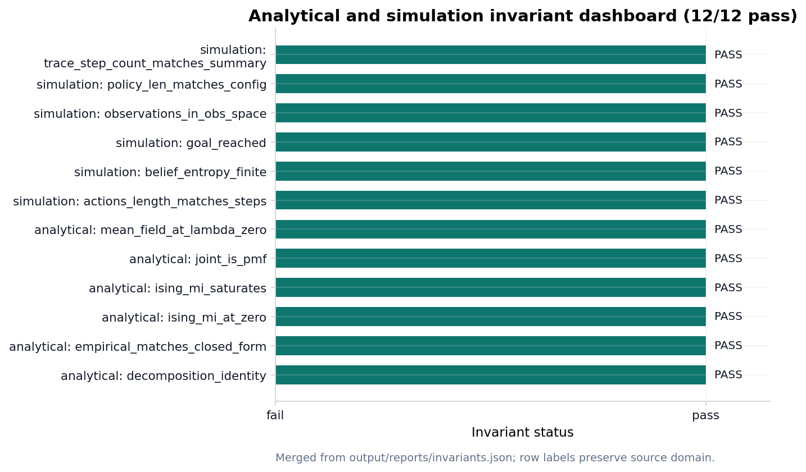

Validation invariants
The analytical invariant registry runs before PDF rendering ([sec:methods_analytical]). On a clean checkout 12 / 12 checks pass in the merged validation report, which records simulation invariants when the pymdp harness ran ([sec:results_si_tmaze]).
[fig:invariant_dashboard] lists each analytical and simulation gate; failures block publication artifacts. See [sec:methods_sheaf] for how invariant counts hydrate manuscript tokens.
Simulation invariants merge into the analytical report after the pymdp harness runs ([sec:results_si_tmaze]). [fig:invariant_dashboard] summarizes pass/fail status for both domains on the clean tree.
The replay matrix exposes deterministic rerun comparison as table
data rather than prose. It contains 13 producer rows, uses explicit
replay-or-fingerprint methods, and every row must match its saved
artifact hash (true).
The sensitivity fragment binds the deterministic toy
sweep to the canonical sheaf track.
output/data/sensitivity_sweep.json contains 96 cells across
toy parameters, policy modes, seeds, horizons, and graph topologies; the
hydrated flag true is the only manuscript claim about
coverage.
The companion output/data/si_policy_grid.json records
measured policy-mode rows derived from
si_policy_comparison.json, not a synthetic grid. Missing
cells fail the artifact schema before they can become prose; the
topology trace artifact contributes 4 deterministic topology traces.
The uncertainty fragment reports only normalized toy
summaries. output/data/uncertainty_summary.json contains 12
belief and policy-posterior rows plus 3 finite entropy bins, and
true is false if any posterior row fails to sum to one
within the deterministic tolerance.
Policy uncertainty is recorded in generated policy artifacts rather than hand-entered into the manuscript. The posterior grid contributes 5 available posterior rows; the EFE values artifact reports availability-or-measured-fallback flag 1. The fragment is therefore a validation surface, not an empirical uncertainty claim.
The benchmark fragment adds a compact toy matrix over
the Bernoulli, T-maze, and graph-world artifacts.
output/data/toy_benchmark_matrix.json reports 3 model rows
and true only when each row names an artifact, metric, and
passing gate.
The matrix is scoped to deterministic exemplar models. It is useful as a cross-track smoke test, not as a performance benchmark for biological or deployed systems.

State-space catalog track
The state_space_catalog track enumerates finite state
spaces, action spaces, and policy counts for the deterministic toy
models. The catalog artifact is
output/data/state_space_catalog.json: it currently records
6 rows, with finite-space status true.
Causal ablation track
The causal_ablation track records deterministic toy
ablations over finite preferences, likelihood-noise settings, and
graph-topology perturbations. The matrix artifact is
output/data/causal_ablation_matrix.json: it currently
records 36 cells, with complete-grid status true.